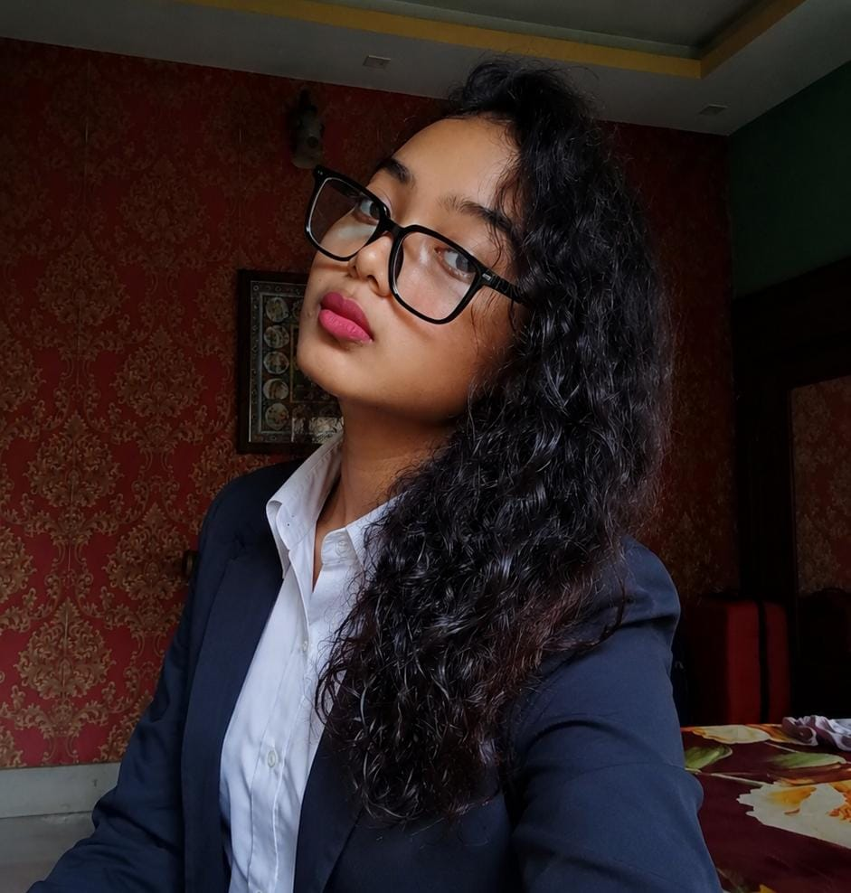

Learning today, leading tomorrow.
My name is Ashmita Nandi. I am a dedicated, enthusiastic, and self-motivated individual who believes in continuous learning and personal development. I strive to maintain a balanced lifestyle by pursuing activities that enhance my knowledge, creativity, and overall personality.
I am currently learning Cloud Computing and Web Development as I am keen to develop my technical knowledge and practical skills in emerging technologies. These fields have sparked my interest in technology, problem-solving, and innovation, motivating me to continuously expand my understanding of the digital world.
One of my primary interests is football. I enjoy watching international football matches and closely follow prestigious tournaments such as the FIFA World Cup, UEFA European Championship, and UEFA Champions League.
Apart from football, I enjoy cooking, reading books, and writing poetry. These hobbies help me stay creative, broaden my perspective, and continuously learn new things.
I aspire to build a successful career through dedication, continuous learning, and innovation while making meaningful contributions to society.
To continuously enhance my knowledge, technical skills, and professional abilities while contributing positively to an organization. I aspire to grow as a responsible professional by embracing lifelong learning, innovation, and teamwork.
📞 Phone
+91 97480 48530
✉ Email
ashmita.nandi.bba29@tha.edu.in